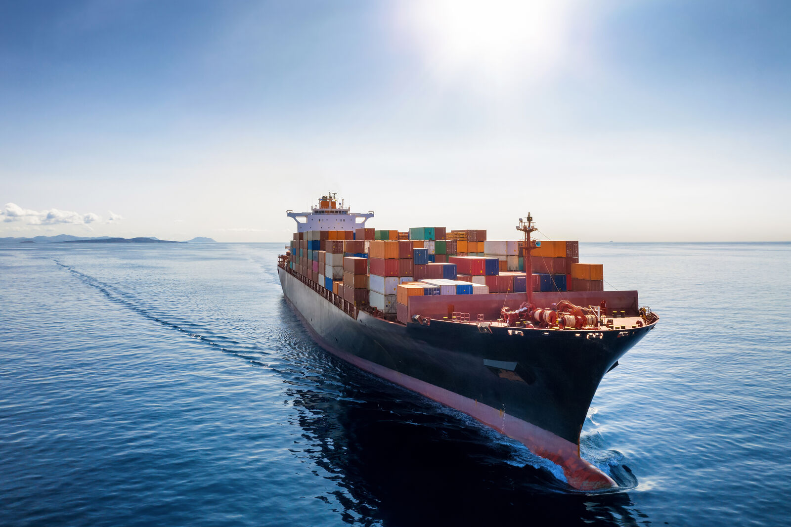
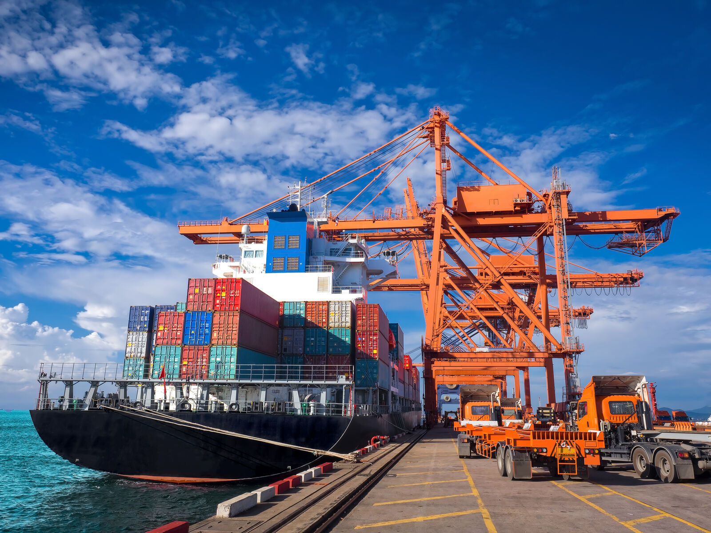
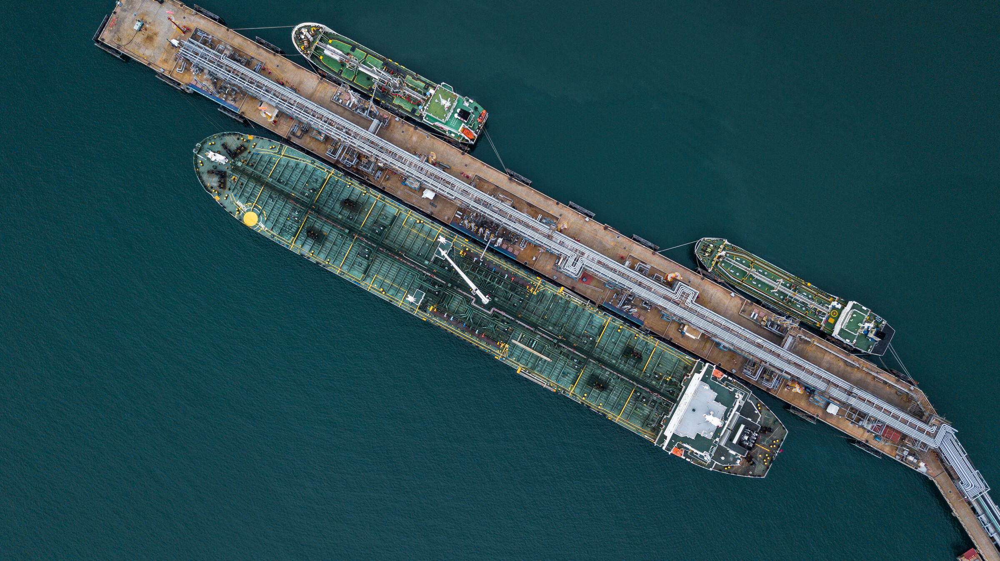
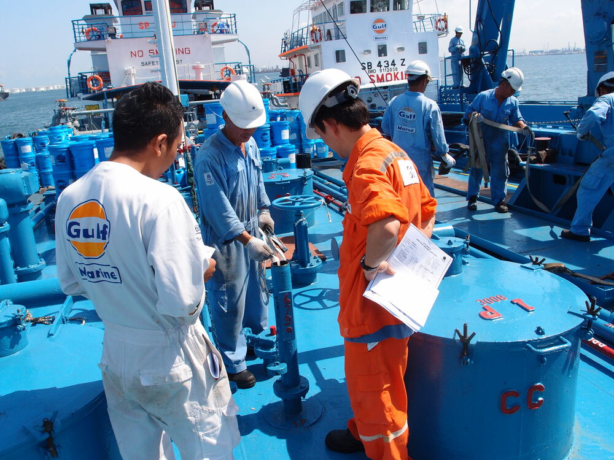
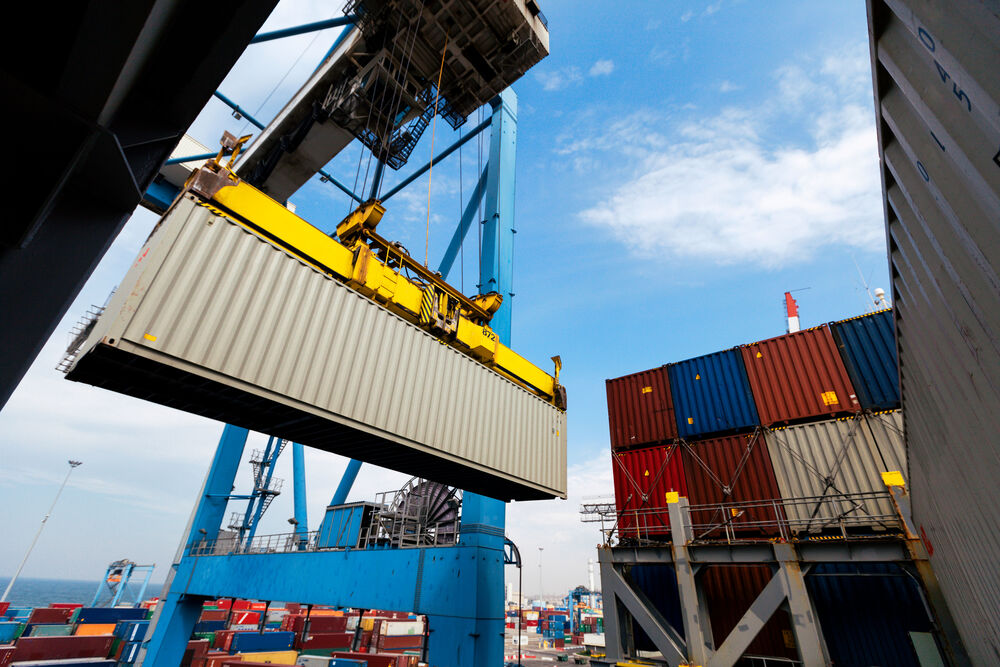
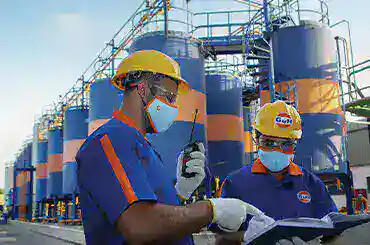

Където и да сте, каквото и да ви трябва — ние сме с вас. Подкрепени от над 40 завода за смесване на масла, работим в повече от 80 държави, а обширната ни мрежа за доставки обхваща над 1000 пристанища с 24-часова логистика по цял свят. Интелигентната и отзивчива поддръжка ви държи в движение по-дълго, със способност да обслужваме по-големи флоти и възможност да проследяваме 70 000 кораба в реално време, като прогнозираме зареждането със смазочни материали на всеки кораб. Ние сме до вас при всяко плаване и ви предлагаме персонализирани препоръки и решения за морски смазочни материали по всяко време.
Превъзходна поддръжка, където и когато ви е нужна. С усъвършенстваната ни гама морски масла, смазочни материали и греси можете да стигнете по-далеч и да постигнете повече. От 2008 г. сме до корабните компании и доставяме на индустрията висококачествени морски греси, масла и смазочни материали с одобрение от производителите на двигатели (OEM). Знаем какво е нужно за безпроблемна работа в морето — затова клиенти по света разчитат на Gulf, използвайки нашия технически опит и поддръжка, за да задвижват корабните си операции сега и в бъдеще.
Знаем също, че операциите в морето са непредвидими по природа. Затова обещаваме да бъдем надежден партньор, на когото можете да разчитате за стабилна подкрепа при уникалните предизвикателства, пред които се изправяте. Не сме просто доставчик на морски смазочни материали — фокусирани сме върху високопроизводително смазване и динамична логистична подкрепа без географски граници.

С над десетилетие опит в подкрепа на корабната индустрия разбираме колко са важни морските смазочни материали за безпроблемната и ефективна работа. Затова сме разработили богата гама усъвършенствани морски смазочни материали, които осигуряват пълна защита на двигателя и оптимизират работата на оборудването. Специалният ни отдел за изследвания и разработки никога не спира да търси съвършенство и непрекъснато подобрява и усъвършенства технологиите ни за смазочни материали според обратната връзка от водещи производители (OEM) и клиенти.
Изпитани, тествани и доказани, всички наши технологии за смазочни материали преминават строги изпитания в реални условия на морски кораби, в съответствие със строгите изисквания на OEM.

Обширните ни знания и опит в областта на морските моторни масла и смазочни материали ни движат напред, а страстта към производителността е в основата на всичко, което правим — отиваме отвъд очакванията, за да предоставим морски греси и смазочни материали с превъзходно качество. Световният ни екип от специалисти работи съвместно с вашия технически и инженерен персонал и поставя като приоритет да опознае нуждите ви отвътре навън. Тези допълнителни технически услуги по морско смазване ни позволяват да предлагаме решения и препоръки, които правят реална разлика за флота ви на всяка стъпка.

Знаем, че корабните операции зависят от стриктно спазване на график — затова поддръжката ни е специализирана и съобразена с вашите нужди. Затова своевременните съвети и решения са толкова важни за нас — с обширна мрежа за обслужване на клиенти по целия свят, за да можем да предоставяме специализирано и персонално обслужване, когато ви е нужно.
Когато работите с Gulf, разчитате и на надеждна експертна подкрепа, която ви отвежда там, където трябва да стигнете. На всеки клиент на Gulf Marine се определя едно лице за контакт, което ще ви съдейства от подаването на поръчката до доставката. Подкрепата ни не спира дотук — със световни центрове за обслужване на клиенти, отворени 24/7, 365 дни в годината, винаги има кой да отговори на въпросите ви за морски масла и да ви окаже подкрепата, от която се нуждаете, за да успявате през цялата година.
С Gulf Oil Marine до вас плаването е гладко. Предлагаме много повече от високопроизводителните си продукти — осигуряваме и пълната увереност и спокойствие, които идват от знанието, че нуждите ви от морски смазочни материали са напълно покрити, както и опита, от който се нуждаете, за да продължите напред.
Можете да научите повече за обширната ни колекция от морски масла, греси и смазочни материали в специалния ни уебсайт на Gulf Marine.


